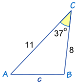
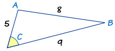
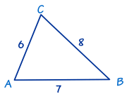
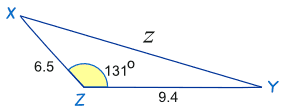

The Law of Cosines
For any triangle ...

a, b and c are sides.
C is the angle opposite side c
... the Law of Cosines (also called the Cosine Rule) says:
c2 = a2 + b2 − 2ab cos(C)
It helps us solve some triangles. Let's see how to use it.
Example: How long is side "c" ... ?

We know angle C = 37º, and sides a = 8 and b = 11
Answer: c = 6.67
How to Remember
How can you remember the formula?
Well, it helps to know it's the Pythagoras Theorem with something extra so it works for all triangles:
(only for Right-Angled Triangles)a2 + b2 = c2 Law of Cosines:
(for all triangles)a2 + b2 − 2ab cos(C) = c2
So, to remember it:
- think "abc": a2 + b2 = c2,
- then a 2nd "abc": 2ab cos(C),
- and put them together: a2 + b2 − 2ab cos(C) = c2
When to Use
The Law of Cosines is useful for finding:
- the third side of a triangle when we know two sides and the angle between them (like the example above)
- the angles of a triangle when we know all three sides (as in the following example)
Example: What is Angle "C" ...?

The side of length "8" is opposite angle C, so it is side c. The other two sides are a and b.
Now let us put what we know into The Law of Cosines:
Now we use our algebra skills to rearrange and solve:
Subtract 25 from both sides:39 = 81− 90 × cos(C) Subtract 81 from both sides:−42 = −90 × cos(C) Swap sides:−90 × cos(C) = −42 Divide both sides by −90:cos(C) = 42/90 Inverse cosine:C = cos-1(42/90) Calculator:C = 62.2° (to 1 decimal place)In Other Forms
Easier Version For Angles
We just saw how to find an angle when we know three sides. It took quite a few steps, so it is easier to use the "direct" formula (which is just a rearrangement of the c2 = a2 + b2 − 2ab cos(C) formula). It can be in either of these forms:
cos(C) = a2 + b2 − c2 2ab
cos(A) = b2 + c2 − a2 2bc
cos(B) = c2 + a2 − b2 2ca
Example: Find Angle "C" Using The Law of Cosines (angle version)

In this triangle we know the three sides:
- a = 8,
- b = 6 and
- c = 7
Use The Law of Cosines (angle version) to find angle C :
Versions for a, b and c
Also, we can rewrite the c2 = a2 + b2 − 2ab cos(C) formula into a2= and b2= form.
Here are all three:
a2 = b2 + c2 − 2bc cos(A)
b2 = a2 + c2 − 2ac cos(B)
c2 = a2 + b2 − 2ab cos(C)
But it is easier to remember the "c2=" form and change the letters as needed.
As in this example:
Example: Find the distance "z"

The letters are different! But that doesn't matter. We can easily substitute x for a, y for b and z for c
Answer: z = 14.5
Did you notice that cos(131º) is negative and so the last term ends up positive (+ 80.17...)
The cosine of an obtuse angle is always negative (see Unit Circle).